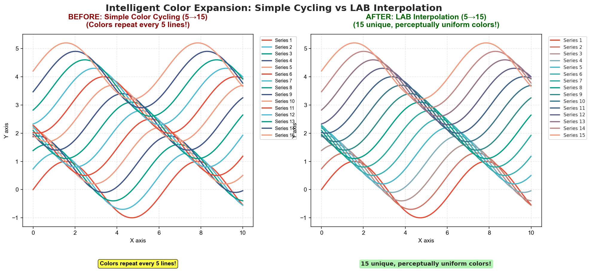

Intelligent Color Expansion
Automatically generate unlimited perceptually distinct colors using LAB space interpolation.
The Problem
Default color palettes typically have 5-10 colors. When plotting many categories (15+), colors must repeat:
{kind=link}
Left (Without Expansion): Simple cycling → colors 1-5 repeat → Series 1, 6, 11 have identical colors
Right (With Intelligent Expansion): LAB interpolation → 15 unique, gradually varying colors → all series distinguishable
Why This Matters
Color repetition leads to:
Confusion: Which line is which?
Errors: Misinterpretation of data relationships
Poor Communication: Reduced chart readability
Traditional solutions:
❌ Simple Cycling:
colors[i % len(colors)]→ obvious repetition❌ Random Colors: No perceptual uniformity → some pairs too similar
❌ Manual Selection: Time-consuming and requires color expertise
The Solution: LAB Interpolation
Huez uses perceptually uniform LAB color space for interpolation.
What is LAB Color Space?
LAB (CIE L*a*b*) is a color space designed to be perceptually uniform:
L: Lightness (0 = black, 100 = white)
a: Green-red axis
b: Blue-yellow axis
Key Property: Equal distances in LAB space = equal perceived color differences
RGB Space: ΔR² + ΔG² + ΔB² ≠ Perceived difference
LAB Space: ΔL² + Δa² + Δb² ≈ Perceived difference ✓
Algorithm
Convert base colors from RGB → LAB
Interpolate linearly in LAB space
Convert back from LAB → RGB
def intelligent_color_expansion(base_colors, n_needed):
# Step 1: RGB → LAB
lab_colors = [rgb_to_lab(hex_to_rgb(c)) for c in base_colors]
# Step 2: Interpolate
step = (len(lab_colors) - 1) / (n_needed - 1)
expanded = []
for i in range(n_needed):
idx = i * step
base_idx = int(idx)
weight = idx - base_idx
# Linear interpolation in LAB
lab = interpolate(lab_colors[base_idx],
lab_colors[base_idx + 1],
weight)
# Step 3: LAB → RGB
expanded.append(lab_to_rgb_to_hex(lab))
return expanded
Usage
Automatic Expansion
Color expansion happens automatically when needed:
import matplotlib.pyplot as plt
import huez as hz
import numpy as np
hz.use("scheme-1")
# Plot 15 series - Huez automatically expands from 5 to 15 colors
x = np.linspace(0, 10, 100)
for i in range(15):
plt.plot(x, np.sin(x + i * 0.5), label=f'Series {i+1}')
plt.legend()
plt.title('Automatic Color Expansion')
plt.show()
Output: 15 distinct colors with smooth gradation
Manual Expansion
Expand colors programmatically:
import huez as hz
# Start with 3 colors
base_colors = ["#E64B35", "#4DBBD5", "#00A087"]
# Expand to 12 colors (using simplified API)
expanded = hz.expand_colors(base_colors, n_needed=12)
print(f"Original: {len(base_colors)} colors")
print(f"Expanded: {len(expanded)} colors")
# Use expanded colors
for i, color in enumerate(expanded):
plt.plot(x, y + i*0.5, color=color, label=f'S{i+1}')
Note
You can also use the full function name:
from huez.intelligence import intelligent_color_expansion
expanded = intelligent_color_expansion(base_colors, n_needed=12)
Both approaches are equivalent.
Get Current Palette Colors
hz.use("scheme-1")
# Get 10 colors (auto-expanded if needed)
colors = hz.get_colors(n=10)
print(colors)
Visual Comparison
Simple Cycling (Bad):
# Traditional approach
base_colors = ["#E64B35", "#4DBBD5", "#00A087", "#3C5488", "#F39B7F"]
cycled = [base_colors[i % len(base_colors)] for i in range(15)]
# Result: Colors repeat every 5
# Series 0 == Series 5 == Series 10 (same color)
LAB Interpolation (Good):
# Huez approach
expanded = intelligent_color_expansion(base_colors, n_needed=15)
# Result: Smooth gradient from color 0 → 1 → 2 → 3 → 4
# All 15 colors are distinct
Example Output
from huez.intelligence import intelligent_color_expansion
base = ['#E64B35', '#4DBBD5', '#00A087', '#3C5488', '#F39B7F']
expanded = intelligent_color_expansion(base, 12)
for i, color in enumerate(expanded):
print(f"Color {i+1:2d}: {color}")
Color 1: #E64B35 (Original)
Color 2: #C25146
Color 3: #9E5857
Color 4: #7A5F68
Color 5: #4DBBD5 (Original)
Color 6: #3EAFB1
Color 7: #2FA38D
Color 8: #209769
Color 9: #00A087 (Original)
Color 10: #209769
Color 11: #3C6577
Color 12: #F39B7F (Original)
Technical Details
Color Space Conversion
RGB → XYZ → LAB
def rgb_to_lab(rgb):
# 1. Gamma correction (sRGB → linear RGB)
r, g, b = [gamma_correct(x/255) for x in rgb]
# 2. RGB → XYZ (D65 illuminant)
x = 0.4124564*r + 0.3575761*g + 0.1804375*b
y = 0.2126729*r + 0.7151522*g + 0.0721750*b
z = 0.0193339*r + 0.1191920*g + 0.9503041*b
# 3. XYZ → LAB
L = 116 * f(y/yn) - 16
a = 500 * (f(x/xn) - f(y/yn))
b = 200 * (f(y/yn) - f(z/zn))
return (L, a, b)
LAB → XYZ → RGB (reverse process)
Interpolation Formula
Linear interpolation in LAB space:
# Between two colors
L = L1 + (L2 - L1) * weight
a = a1 + (a2 - a1) * weight
b = b1 + (b2 - b1) * weight
Where weight ∈ [0, 1] is the interpolation position.
Perceptual Uniformity
LAB space ensures:
ΔE = √(ΔL² + Δa² + Δb²)
If ΔE = constant for all adjacent pairs
→ Perceived color differences are equal
Fallback Mechanism
If LAB conversion fails (rare edge cases):
try:
expanded = lab_interpolation(colors, n)
except Exception:
# Fallback to simple cycling
expanded = [colors[i % len(colors)] for i in range(n)]
This ensures robustness even in exceptional cases.
Warnings
When expanding beyond base palette size:
>>> intelligent_color_expansion(base_colors, 15)
UserWarning: Expanding color palette from 5 to 15 colors using LAB
space interpolation. For better distinction with many categories,
consider using different visual encodings (markers, line styles, etc.)
Why? Even with perfect interpolation, 15+ colors can be hard to distinguish. Additional encodings recommended.
Best Practices
For Many Categories
Combine color with other visual encodings:
hz.use("scheme-1")
markers = ['o', 's', '^', 'v', 'D', 'p', '*', 'h', '+', 'x']
linestyles = ['-', '--', '-.', ':']
for i in range(12):
plt.plot(x, y + i*0.5,
marker=markers[i % len(markers)],
linestyle=linestyles[i % len(linestyles)],
markevery=10,
label=f'Series {i+1}')
Or use faceting:
import seaborn as sns
# Instead of 20 colors in one plot
g = sns.FacetGrid(df, col='category', col_wrap=5, height=3)
g.map(plt.plot, 'x', 'y')
Recommended Limits
≤ 6 colors: Perfect, all easily distinguishable
7-10 colors: Good, with careful design
11-15 colors: Acceptable, add markers/line styles
16+ colors: Consider faceting or hierarchical grouping
Verify Expansion
Check expanded colors:
from huez.intelligence import intelligent_color_expansion
import matplotlib.pyplot as plt
import matplotlib.patches as mpatches
base = ['#E64B35', '#4DBBD5', '#00A087', '#3C5488', '#F39B7F']
expanded = intelligent_color_expansion(base, 12)
# Visualize palette
fig, ax = plt.subplots(figsize=(12, 2))
for i, color in enumerate(expanded):
ax.add_patch(mpatches.Rectangle((i, 0), 1, 1,
facecolor=color, edgecolor='black'))
ax.text(i+0.5, -0.3, f'{i+1}', ha='center', va='top')
ax.set_xlim(0, len(expanded))
ax.set_ylim(-0.5, 1)
ax.axis('off')
plt.title('Expanded Color Palette')
plt.show()
Comparison with Alternatives
Method |
Perceptual Uniformity |
Ease of Use |
Quality |
|---|---|---|---|
Simple Cycling |
❌ No |
✅ Easy |
❌ Poor |
Random Colors |
❌ No |
✅ Easy |
❌ Inconsistent |
Manual Selection |
🟡 Depends |
❌ Hard |
🟡 Varies |
LAB Interpolation |
✅ Yes |
✅ Automatic |
✅ Excellent |
API Reference
- huez.intelligence.intelligent_color_expansion(base_colors, n_needed)[source]
Expand a color palette to a larger number of colors using LAB interpolation.
This function interpolates colors in the perceptually uniform LAB color space to generate a larger palette while maintaining visual distinctiveness.
- Parameters:
- Returns:
List of hex color strings with length n_needed
- Return type:
Examples
>>> base = ['#E64B35', '#4DBBD5', '#00A087'] >>> expanded = intelligent_color_expansion(base, 10) >>> len(expanded) 10
Parameters
base_colors(List[str]): Base palette in hex format (e.g.,['#E64B35', '#4DBBD5'])n_needed(int): Number of colors needed
Returns
List[str]: Expanded color list in hex format
Raises
UserWarning: When expanding palette size (informational)
Examples
Example 1: Expand from 3 to 9 colors
base = ['#E64B35', '#4DBBD5', '#00A087']
expanded = intelligent_color_expansion(base, 9)
# Plot with expanded colors
for i, color in enumerate(expanded):
plt.plot(x, y + i, color=color)
Example 2: Integration with Huez
hz.use("scheme-1")
# Automatically uses expansion for 12 series
for i in range(12):
plt.plot(x, y + i, label=f'S{i+1}')
Further Reading
Cairo, A. (2016). The Truthful Art. Chapter on Color Selection
Next Steps
Learn about Smart Colormap Detection for heatmaps
Check Colorblind Accessibility for colorblind safety
Read Best Practices for usage tips